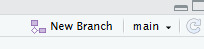

Version control for beginners
About this session
This is an introduction to version control using git. In this session, we’ll:
- do a no/low-tech introduction to the general idea of version control using Microsoft Word
- then talk about how Git’s view of version control differs from Word
- we’ll then do a more technical practical using Git. Because git
Version control in two minutes
Version control refers to the use of software to track changes to the code base of a project. Word’s track changes is a simple version control system, because it allows you to a) see how a document has developed, and b) control that development by e.g. accepting or rejecting changes. Version control is extremely important for code-driven project. As code grows, managing changes becomes more complicated - particularly when several developers collaborate on a project. Version control aims to overcome these problems by providing tools to assist developers in managing their code base. This helps to assure the quality of the finished code by making sure that all and only the working code is passed on to users.
Why do version control
- version control is consistent with best practice software development techniques.
- industry standard for analysis in other sectors
- follows leading stakeholders, especially PHS, NHS Digital
- necessary for reproducible analytics pipelines
- mandate for open code
- solves complex problems of collaboration as the scope of projects grow
Git = version control for the individual
GitHub = a key tool for distributed version control
GitHub is based on Git, but provides a centralised location for repositories. For example, Microsoft host their source code on GitHub, as do PHS, NHS Digital, and many others. As well hosting the repository, and allowing users to choose to share their code, GitHub provides many other tools for software development. PHS provide an excellent quick introduction to GitHub workflow on their guidance page.
Gitea
Gitea is similar to GitHub, except that private servers can be created. This is useful to share confidential code securely with authorised users.
Practical
Setup
None of this is specific to version control:
- in posit.cloud, create a new Rstudio project
- give it a name
- create an R script in that project
- write a simple script (
"hello world"or2 + 2if you’re not an R person) - save your R script in your project root
Starting Git
Tools>Version Control>Project Setup- pick Git
- “do you want to initialize a new git repository for this project”
- repo explainer while restarting
- .git subdirectory, which contains no user servicable components
- gitignore, which is important to our story
- repo explainer while restarting
- our new repo is where git will track the changes we make to our files
- one piece of setup information: in the terminal, please run
- git config –global user.email “you@example.com”
- git config –global user.name “Your Name” (this is a quirk for Posit Cloud. If you’re on the desktop, you’ll probably only need to ever do that once)
Adding files to our repo
- you need to add files to the repo to make that happen
- Git pane: should contain three files with yellow status blobs
- the Git pane gives a simple GUI for interacting with our repo
- select all, and tick the
Stagedcheckboxes, to add them to the repo- Add/Stage = Git is keeping an eye on these files
Committing files to our repo
- then click
Committo save the current state of the files- write a commit message, traditionally “first commit”
- Commit = Git has added the current state of your files to the repo, as the commit summary should show you
- by default, Git adds those files to a branch, called Master
- decolonialising point, this is more properly called Main in more recent versions of Git (including those on Github)
- branch explainer
- you will want to rename this branch as
mainotherwise Github will be a pain
git branch -m mainin the terminal will do it (might need a cheeky refresh in the Git pane)
Change your R script
- make a change to your script and save
- you’ll see a blue modified icon appear in the Git pane next to the file name
- stage and commit the file
- you’ll see a diff (diff explainer)
- add a commit message and press
Commit
History
- look at the Git history

- explore each of your two commits
Branching
If you’re doing something more involved to your file(s), you might consider creating a branch. For example, say you’re planning long-term improvements to the contents of main. You might create a branch - dev, say - to do that development work. That’d free you to potentially build an entirely new piece of work without needing to keep the old one working.
New branch and name itdev- at the start, your new branch will be a copy of the current state of
main
- at the start, your new branch will be a copy of the current state of
- now re-write your script
- feel free to make multiple commits on the way!
- now look again at the Git history: you’ll see coloured blobs telling you which branches changes were made on
- switch to
main, and in the terminalgit merge devto bring your dev changes in- you can delete
devnow withgit branch -d dev
- you can delete
Git bash
You’ll notice that we don’t have all the tools we might ever need in the Git pane in Rstudio. Git is mainly intended to be used via the command line in the Terminal.
Git bash toolkit
git init= start a new Git repo heregit status= what’s currently committed/changedgit add .= add everything and track itgit commit -m "commit message"= commit all tracked filesgit checkout -b emma= create a branch named “emma” and switch to itgit branch -m steve= rename current branch to “steve”git checkout main= switch back to the main branch